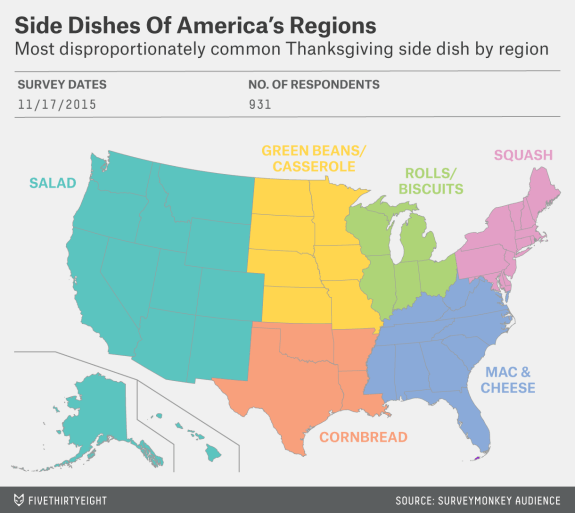

Thanksgiving — when we give thanks and celebrate a tale about the welcoming of foreign refugees to American shores — is once again upon us. For some, it’s a day of mass media consumption, with a parade and three NFL games. For others, it’s a day to identify the secret Canadians in our midst by finding out they don’t have plans (Kim!). Sure, we’ve hit the point where the Santa Claus float at the end of the Macy’s Thanksgiving Day Parade commemorates the start of the third week of Christmas music on the radio, but at least turkeys are cheap, right?
And that’s what Thanksgiving is really about: food. So, in the spirit of the things that bring us all together, let’s peel apart this holiday and carve this nation up into factions like a bargain-bin bird. Who eats what where? Our SurveyMonday Audience poll about Thanksgiving traditions had 1,058 respondents.
Chicken, pork and roast beef got cursory shout-outs as main Thanksgiving dishes, but turkey rules, with 82 percent of respondents saying the other, other white meat is the centerpiece of their meal. When you get past the poultry and check out the side dishes, though, the regional distinctions really come out.
Here’s the most disproportionately consumed side dish in each region:
Going deeper, the Southeast is the definitive home of canned cranberry sauce; respondents from the region are 50 percent more likely to pick that over the homemade variety. The Middle Atlantic states disproportionately have cauliflower as a side — 17 percent in the region versus 9 percent nationwide — while Texas and central Southern states see cornbread as far more necessary than the rest of the country, with 40 percent of respondents from those regions having it at dinner, compared with only 28 percent of the nation.
The Southeast prefers their carbs in the form of mac and cheese — 35 percent of respondents in that region include the dish on their Thanksgiving menu versus 20 percent of the country overall. Meanwhile, New England is losing its mind over squash, with 56 percent demanding it on their table, compared with only 18 percent of the nation as a whole. This is, by far, the most confusing finding of this whole pursuit. Did Gronk endorse squash or something?
What about dessert? Every region enjoys pumpkin pie. But beyond that, there are three Americas: The America that disproportionately has apple pie (New England and the Middle Atlantic), the America that has pecan pie and sweet potato pie (the assorted South), and the America that consumes cherry pie (the Midwest and West).
Still, after dessert, the nation unites around that most American of traditions: buying shit. With little variation among regions, a solid 23 percent of respondents said they would shop Black Friday sales on Thanksgiving Day, a great way to leave the family behind a little early.
Another way to ditch the party early: leave after dinner to hang out with high school friends. Thirty-seven percent of respondents said they’ve done that. So it might be worth checking out Facebook ahead of time to see which of your old associates don’t have kids yet. I know I’ll be doing that, and I’ll see you at that bar that didn’t card when we were 19.
You can download the data for yourself here
Like Thanksgiving food? Like Buzzfeed? See which Thanksgiving meal you are with this short quiz.